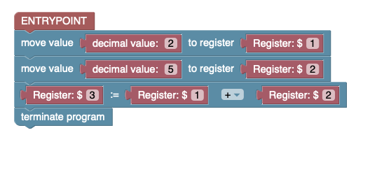

Blocksembler
What is Blocksembler?
Blocksembler is a block-based programming environment that allows to compose and excute armlet assembly code. The main difference to conventionel text-based code editors is that Blocksembler allows users to compose instructions via drag and drop similar to other block-based programming environments like Scratch and MakeCode. As depicted in the following picture, instructions are represented as visual blocks, hence the name:

Most assembly instructions expect arguments that can be either specific registers, immediate values (e.g. decimal or hexadecimal values) or labels. These primitives are shaped similar to puzzle pieces and can be snapted into the instructions.
Note
Blocksembler automatically prevents invalid block connections. For example, in a move instruction, only register primitives are valid as the second argument. Attempting to snap a decimal value primitive into that slot will not work.
Walkthrough
In this guide, we will implement a simple armlet program that stores two values in registers $1 and $2, adds them, and stores the result in register $3. Finally, we will execute the program using the integrated armlet emulator.
Step 1: Opening Blocksembler
Open the browser and visit https://blocksembler.github.io and click on which leads you to follwing page:
{kind=link}
The Blocksembler code editor consists of three parts:
The Toolbox.
All armlet assembly instructions are grouped in categories (e.g. System Instructions). You can browse through the instructions by clicking on the categories.
The Workspace
The Workspace is the place were the assembly program is composed. You can drag instructions from the toolbox into this area or rearange your assembly program via drag and drop.
The Assembly Code View
While crafting block-based assembly programms in the workspace, the Assembly Code View displays the according text-based assembly code.
Step 2: Starting a New Project
To start a new project click on File -> New Project in the top menu. This will remove any blocks from the Workspace and immediatly add a Entrypoint-block to your workspace.
The Entrypoint block acts as the starting point of your program in Blocksembler. When the generated code is executed, the instructions connected to this block will be run first.
Note
Since every armlet program has a single distinct starting point (i.e., the instruction stored at address 0x0000), Blocksembler ensures that you cannot add a second Entrypoint block.
Step 3: Dragging Instructions into the Workspace
As a first step we are going to look for the move-instruction in the Memory Operations-toolbox and drag it into the workspace. The first thing one might notice is, that the instruction we just dragged into the workspace looks a bit different than the move instruction shown before. Instead of the red primitive blocks we see transparent blocks filling the two slots:

By default, newly added instructions include placeholder (“shadow”) blocks for their arguments. These placeholders are fully functional, but they’ll disappear the moment you replace them with a real primitive block. As we want to move a decimal value into a register we are going to fill the two slots with an decimal and register block as shown below:

Warning
Only blocks connected to the Entrypoint block or its successors are considered by the code generator. You can test this by disconnecting the move instruction from the Entrypoint block and observing the changes in the Assembly Code View.
Finally, we add another mov-instruction and a add-instruction (can be found in the Arithmetic Instructions toolbox) that we end up with a program like this:
Step 4: Terminating the Program with halt-Instructions
In armlet assembly, programs terminate when they encounter a corresponding halt instruction. You can find these instructions in the System Structure toolbox, labeled “terminate the program.” Drag a halt instruction into the workspace, then attach it below the previously added move instruction:
Step 5: Switching to the Emulator
To run a the program we’ve just created, we need to switch to the debug mode by clicking on Run Code item in the application menu (clicking on Edit Code leads back to the block-based editor):

The Control Panel
The Control Panel provides all the functionality needed to interact with the emulator. You can load programs into memory, run them, or reset the emulator to its initial state.
Loaded Program
This section displays not only the loaded machine code but also its potential interpretations. Since a single binary word—such as 0000000001011010—can be viewed in multiple ways, you can see both its decimal equivalent (e.g., 90) and the corresponding armlet instruction (e.g., mov $1, 2).
Register View
Here, you can see the current values of all registers, including the program counter (pc) and status flags.
Memory Spy
Because the emulator’s memory is much larger than the portion shown in the Loaded Program section, the Memory Spy allows you to inspect any memory area by specifying:
A Start Address (in decimal or hexadecimal), and
A Size (maximum of 30 words).
It will then display the specified number of words starting from the provided address.
Assembly Code View
Displays the assembly source code.
Step 6: Running the Program
To run the program we’ve created in Step 1 - Step 4 we need to follow these steps:
Load the program to memory by clicking on the
 button in the Control Panel
button in the Control PanelRun the Programm by clicking on the
 button. This will start the automatic execution of the programm. While execution the instruction that is going to be executed next is highlighted in the Loaded Program section.
button. This will start the automatic execution of the programm. While execution the instruction that is going to be executed next is highlighted in the Loaded Program section.Optional: By clicking the
 button, only the next instruction is executed. This allows users to step through the program one instruction at a time.
button, only the next instruction is executed. This allows users to step through the program one instruction at a time.
Once the program terminates, the user receives a notification via an alert message.

Step 7: Importing/Exporting your Solutions
Finally, you can import or export assembly code by clicking on File -> Export Assembly Code or File -> Import Assembly Code.

Labels & Jump instructions
Whenever we want to redirect execution to a different location in the program, we use labels to specify the exact jump destination. Labels are defined using a label definition block (), which refers to the block immediately following it.
{kind=link}
To refer to a label (e.g. specifying the target of a jmp instruction) we use label primitives ().
{kind=link}
Note
During the transformation of the assembly program into machine code, these labels are replaced with the actual addresses they refer to.
The following example gives a short demonstration on how labels are used in Blocksembler. The program effectively omits the mov instruction and jumps directly to the hlt instruction.
{kind=link}
Directives
The armlet assembly language also provides directives (e.g., %data) that can be used to define data that should be loaded into memory when the program starts. For example, the following program loads the values 574 and 937 into memory addresses 0x0000 and 0x0001.
{kind=link}
{kind=link}
Comments
In Blocksembler there are two ways to comment your code:
Use in-line comments
To create an inline comment, right-click on the relevant block and select “Add Comment”. The added comment can be toggled open or closed by clicking on the blue question mark.
Use the multi-line comment block
If a larger comment is needed, multi-line comments can be placed between comment blocks, as shown in the following example: